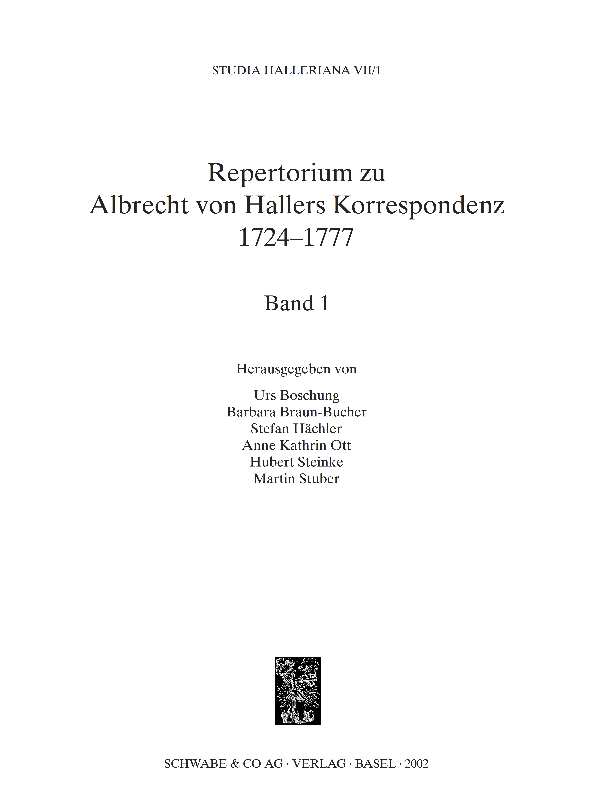
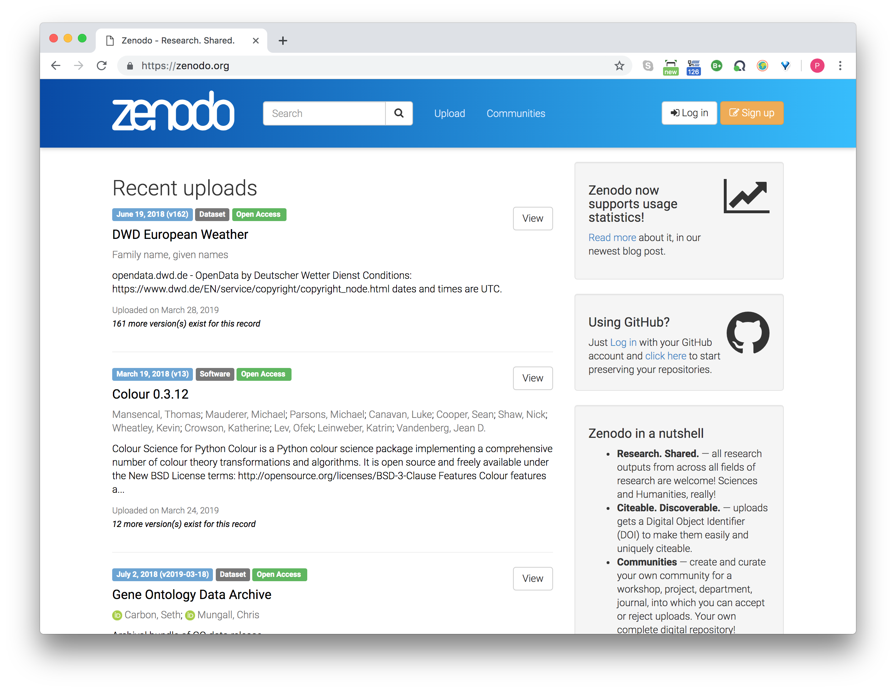
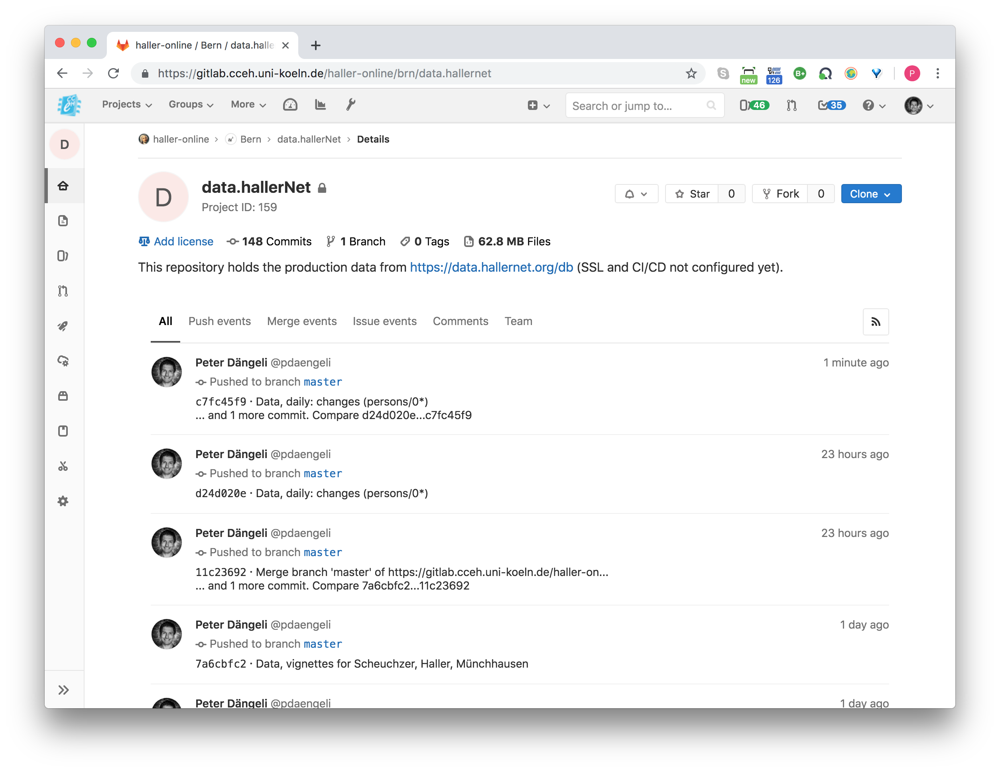
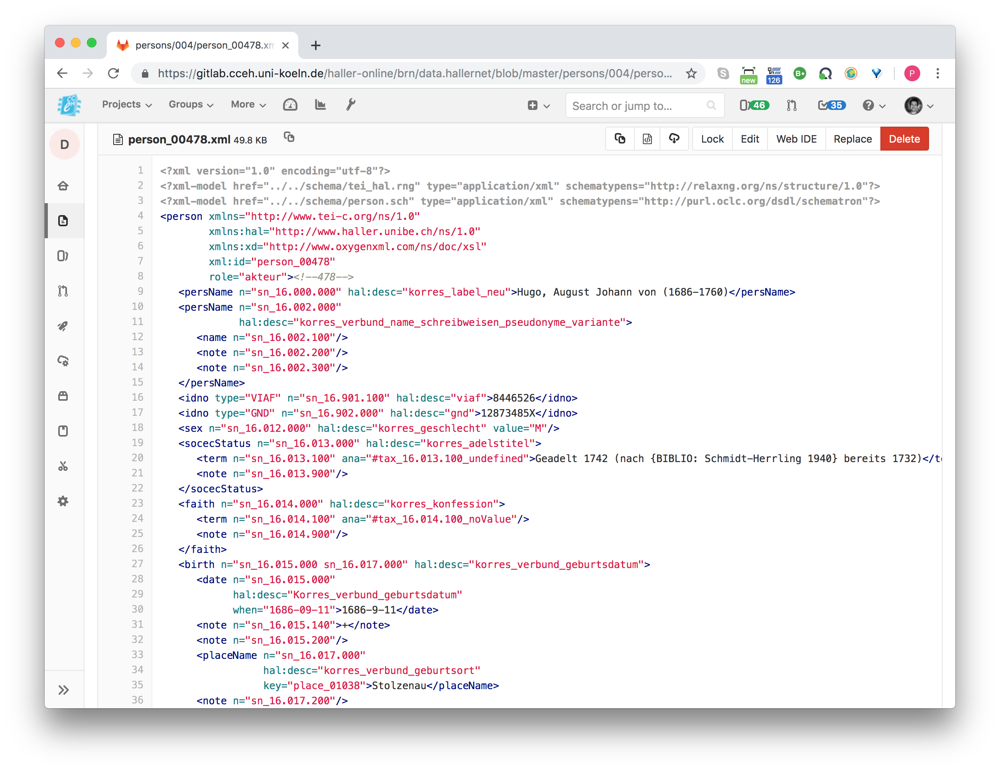
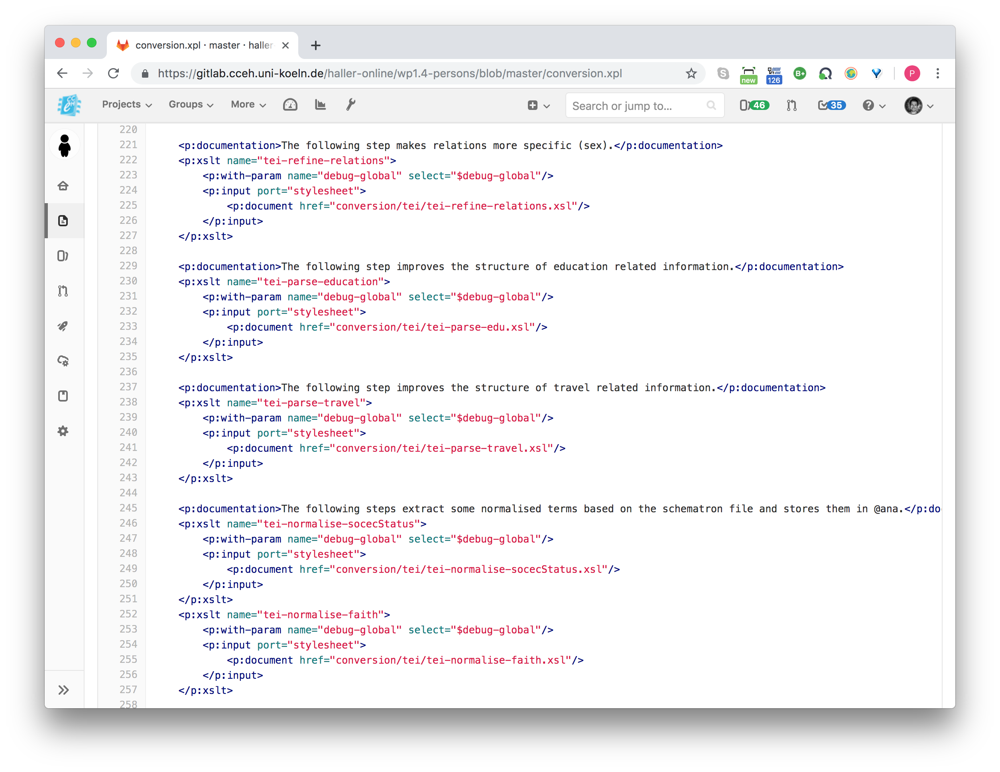
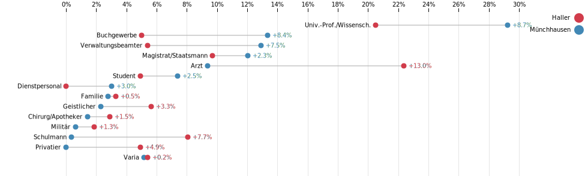

name: Titelseite class: ## Vom Stellenkommentar zum Netzwerk und zurück:<br/> grosse Quellenkorpora und tief erschlossene<br/> Strukturdaten auf *hallerNet* <div style="position: absolute; top: 520px; left: 100px;"><p>Peter Dängeli, Cologne Center for eHumanities</p><p>Martin Stuber, Universität Bern, Historisches Institut</p><p>Christian Forney, Universität Bern, Historisches Institut</p></div> <div style="position: absolute; top: 520px; right: 200px; text-align: right;"><p><em>DHd 2019</em></p><p>Frankfurt/Mainz, 27.-29. März 2019</p></div> -- <div style="position: absolute; top: 550px; left: 30px;"><h3 style="background:rgba(0,0,0,0);">Datentransformation<!-- Transformierte Datengrundlage --></h3></div> <div style="position: absolute; top: 650px; left: 30px;"><h3 style="background:rgba(0,0,0,0);">Generierung von Forschungsdaten<!-- Analysepotenziale --></h3></div> --- ## Spuren der Forschung... <div id="haller1" class="gallery" style="position: absolute; left:-50px; top: 220px; background-color: black; padding: 5px; overflow-x: scroll; overflow-y: hidden; white-space: nowrap;"> <a href="images/Buch_FormationeCordis.png" title="Monti: Commentarius de formatione cordis in ovo incubato (2000)"> </a> <a href="images/Buch_Repertorium.png" title="Boschung et al.: Repertorium zu Albrecht von Hallers Korrespondenz 1724–1777 (2002)">  </a> <a href="images/Buch_Bibliographia.png" title="Steinke, Profos: Bibliographia Halleriana (2004)"> </a> <a href="images/Buch_HallersNetz.png" title="Stuber, Hächler, Lienhard: Hallers Netz (2005)"> <img src="images/Buch_HallersNetz.png" width="200px;" /> </a> <a href="images/Buch_GelehrteKritik.jpg" title=""> </a> <a href="images/Buch_HallerWerlhof.png" title="Sonntag: Paul Gottlieb Werlhof’s Letters to Albrecht von Haller (2014)"> </a> <a href="images/Buch_LebenWerkEpoche.jpg" title="Steinke: Albrecht von Haller: Leben - Werk - Epoche (2008)"> </a> </div> --- name: False Faust background-image: url(images/falsefaust.png) background-size: 100% ## ... und was sie ermöglicht hat <div style="position: absolute; top: 550px; width: 90%; opacity: 0.2;"><p>Johann Wolfgang Goethe: Faust. Historisch-kritische Edition. Herausgegeben von Anne Bohnenkamp, Silke Henke und Fotis Jannidis unter Mitarbeit von Gerrit Brüning, Katrin Henzel, Christoph Leijser, Gregor Middell, Dietmar Pravida, Thorsten Vitt und Moritz Wissenbach. Version 1.1 RC. Frankfurt am Main / Weimar / Würzburg 2018, A, S. 9, URL: http://v1-1.faustedition.net/document?sigil=A&page=9&view=facsimile, abgerufen am 28.3.2019.</p> --- ## Faust Professional <div id="seadragon-viewer-faust" style="width:100%; height:600px;"></div> <div style="position: absolute; top: 550px; width: 90%; opacity: 0.2;"><p><a href="https://images.hallernet.org/iiif/misc/halleronline/persons_excel.tif/full/pct:10/0/default.jpg" target="_blank">https://images.hallernet.org/iiif/misc/halleronline/persons_excel.tif/full/pct:10/0/default.jpg</a></p></div> --- ## Excel to the rescue <div id="seadragon-viewer-excel" style="width:100%; height:600px;"></div> <div style="position: absolute; top: 550px; width: 90%; opacity: 0.2;"><p><a href="https://images.hallernet.org/iiif/misc/halleronline/persons_faust.tif/full/pct:10/0/default.jpg" target="_blank">https://images.hallernet.org/iiif/misc/halleronline/persons_faust.tif/full/pct:10/0/default.jpg</a></p></div> --- ## Ins Zielformat mit XProc     --- name: chord background-image: url(images/chord-unidirectional.png) background-size: contain ## Hoher Vernetzungsgrad --- name: dh19.hallernet.org background-image: url(images/dhd19.hallernet.org.png) background-size: contain ## Das Portal <h3><p>Vorschau:</p><a href="http://dhd19.hallernet.org" target="_blank">http://dhd19.hallernet.org</a></h3> <!-- Landingpage zeigen: Sammlungen, Editionen, Register --> --- ## Zusammengefasst <h3> <ul> <li>Datenreichtum dank langjähriger Beforschung und Nutzung eines zentralen Werkzeugs<br/></li> <li>Vernetzung bereits sehr ausgeprägt</li> <li>Daten als <em>first class citizens</em></li> </ul> </h3> --- name: MS01 background-image: url(images/ms01.jpg) background-size: contain --- name: MS02 background-image: url(images/ms02.jpg) background-size: contain --- name: MS03 background-image: url(images/ms03.jpg) background-size: contain --- name: MS04 background-image: url(images/ms04.jpg) background-size: contain --- name: MS05 background-image: url(images/ms05.jpg) background-size: contain --- name: MS06 background-image: url(images/ms06.jpg) background-size: contain <!-- -/-/- ## Soziale Positionen <br/><br/><br/><br/><br/><br/><br/> ```xml <note type="korres_position" n="sn_16.113.000" hal:desc="korres_zeile_stellung_position"> <term n="sn_16.113.100" cRef="#tax_16.113.000_student"/> <date type="analytical" n="sn_16.113.200" from="1709" to="1711"/> <date type="from" n="sn_16.113.210" from="1709"> <note type="evidence"/> </date> <date type="to" n="sn_16.113.220" to="1711"> <note type="evidence"/> </date> </note> <note type="korres_position" n="sn_16.113.000" hal:desc="korres_zeile_stellung_position"> <term n="sn_16.113.100" cRef="#tax_16.113.000_arzt"/> <date type="analytical" n="sn_16.113.200" from="1715" to="1760"/> <date type="from" n="sn_16.113.210" notAfter="1715" notBefore="1711"> <note type="evidence"/> </date> <date type="to" n="sn_16.113.220" notBefore="1750" notAfter="1760" cert="low"> <note type="evidence">Position wohl bis zum Tod inne gehabt. </note> </date> </note> ``` <div style="position: absolute; top: 550px; width: 90%; opacity: 0.2;"><p>https://gitlab.cceh.uni-koeln.de/haller-online/brn/data.hallernet/blob/master/persons/004/person_00478.xml</p> -/-/- name: oXygen 1 background-image: url(images/oxygen-author-position.png) background-size: contain -/-/- ## Wirkungsorte <br/><br/><br/><br/><br/><br/><br/> ```xml <note n="sn_16.041.000" hal:desc="korres_verbund_wirkungsorte"> <ref n="sn_16.041.100" target="place_00718">Leiden</ref> <date type="analytical" n="sn_16.041.200" from="1709" to="1711"/> <date type="from" n="sn_16.041.210" from="1709"> <note type="evidence"/> </date> <date type="to" n="sn_16.041.220" to="1711"> <note type="evidence"/> </date> <desc n="sn_16.041.300"/> </note> <note n="sn_16.041.000" hal:desc="korres_verbund_wirkungsorte"> <ref n="sn_16.041.100" target="place_00603">Hannover</ref> <date type="analytical" n="sn_16.041.200" from="1715" to="1760"/> <date type="from" n="sn_16.041.210" from="1715"> <note type="evidence"/> </date> <date type="to" n="sn_16.041.220" notAfter="1760"> <note type="evidence">Wirkungsort wohl bis zum Tod</note> </date> <desc n="sn_16.041.300"/> </note> ``` <div style="position: absolute; top: 550px; width: 90%; opacity: 0.2;"><p>https://gitlab.cceh.uni-koeln.de/haller-online/brn/data.hallernet/blob/master/persons/004/person_00478.xml</p> -/-/- name: oXygen 2 background-image: url(images/oxygen-author-wirkungsort.png) background-size: contain -/-/- ## Soziale Positionen <br/><br/><br/><br/><br/><br/><br/>  <div style="position: absolute; top: 550px; width: 90%; opacity: 0.2;"><p><a href="https://observablehq.com/d/71b8979eafe349d9" target="_blank">https://observablehq.com/d/71b8979eafe349d9</a></p></div> --> <!-- name: Diskussion layout: false #Vielen Dank für die Aufmerksamkeit -->